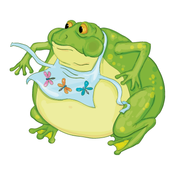

A fel-fu-val-ko-dott béka

Meglátta a réten az ökröt a béka.
– Hatalmas állat! – gondolta a béka. A többi békának ezt mondta:
– Még ma megnövök én is ek-ko-rá-ra! – s elkezdte szívni a levegőt magába.
A többi béka ámulva nézte.
– Ne erőlködj! – mondták.
A béka azonban még több levegőt szívott magába. Majd mérgesen kérdezte:
– Ki a ha-tal-ma-sabb hát?
– Az ökör – felelték a többiek.
A béka még elszántabb lett. Még több levegőt szívott magába.
– No, ki a ha-tal-ma-sabb? – szuszogta nehezen.
Ám a választ már nem hallhatta. Hatalmas puk-ka-nás-sal szétrepedt.
(Jean de La Fontaine nyomán)